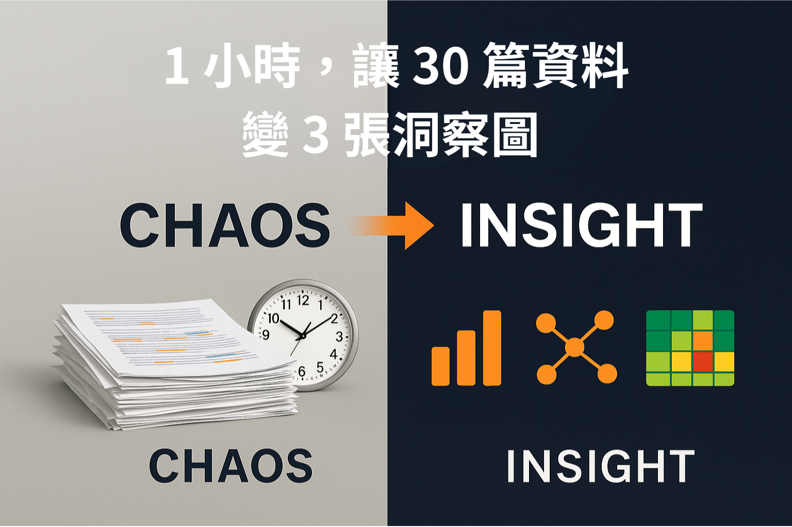

精選文章 / 觀點分享
涵蓋 AI 工程、智慧自動化、精準寫作與論文輔助研究的核心方法與實戰洞察

研究方法
【資料太多，報告太近？】用一張圖鎖定主題、挑對文獻
用主題分佈圖、共現關聯圖與篇章熱力圖，讓質性分析不再盲讀，直攻核心資料。
閱讀更多 →
思維方法
在 AI 時代，為什麼從論文開始練「說服力」？
論文不只是畢業門票，更是訓練邏輯、企劃與提案能力的萬用武器。
閱讀更多 →
AI 應用
🚀 AI 時代的文字大躍進：精準寫作是什麼？
結合元寫作思維與 AI 技術，打造高度貼合脈絡、可規模化複用的專屬內容生產線。
閱讀更多 →
企業轉型
從 AI 智慧中心到流程代理化，中小企業的零程式進化
用零程式工具搭建 AI 智慧中控室，讓流程自動執行、即時回應，推動營運升級。
閱讀更多 →